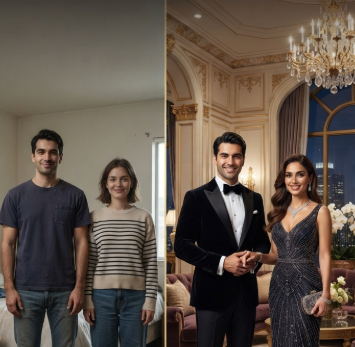
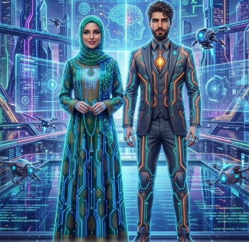

AI Face Magic ✨
O'z rasmingizni sun'iy intellekt yordamida ajoyib uslubga o'tkazing. Uslubni tanlang:
Professional Portrait

Royal Look
Superhero

Luxury Style

Cinematic Look

Future AI
O'z rasmingizni sun'iy intellekt yordamida ajoyib uslubga o'tkazing. Uslubni tanlang:
Professional Portrait
Royal Look
Superhero

Luxury Style
Cinematic Look

Future AI
Neyrotarmoq yuz chizgilarini aniqlamoqda. Iltimos, kameraga qarab turing.
AI tahlil qilmoqda (0%)...